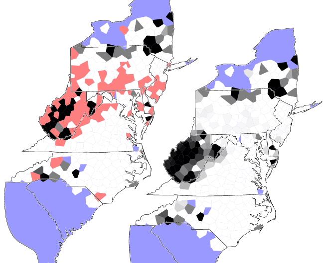

This methods does not work on the individual responses in the data. Instead, counts of patterns are averaged at each location, and the score is based on the values of the locations. This means that counts like true positives are not actual counts, but the sum of a series of values, each value between 0 and 1.
Of course, when an item has no response at all for a location, we can't calculate the average occurrence of a pattern in that location. We cannot simple assign all these location the value 0. That would potentially lead to huge errors, depending on the geographic distribution of the locations with no data. The same happens when we use any other fixed value, like 0.5 or 1.
Instead, we make a guess for each separate location without data, using interpolation on the values for places that have data and are geographically near. This is demonstrated in the map below. In the map on the left, light red indicates locations without data. The map on the right shows also the interpolated values. (The blue areas are not used, since in this example, there is no data at all available for those areas, for none of the items.)
Our interpolated guess for one location may be completely wrong. But on average, the values are much better than if we'd use a fixed value. And it's the average we use in scoring.
The use of interpolation is the main reason for the localised method being so slow. The more complete your data is, the less locations without data, the faster the method becomes, nearing the speed of the raw data method.
